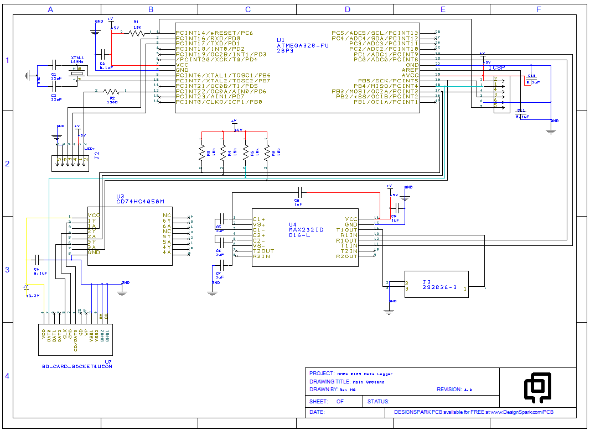
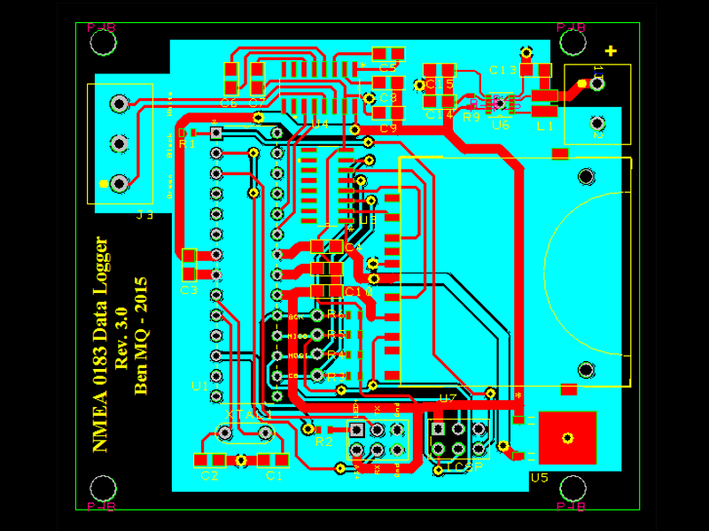

Fish Finder Bathymetry
Bathymetry, the underwater equivalent of topography, is an important component of any aquatic research. Whether one is simply trying to determine the deepest spot in a waterbody or working on something much more complex, such as flow modeling, an accurate understanding of the underwater terrain is required. Traditionally creating bathymetric maps was an extremely time consuming process, requiring many hours of depth sounding and position measurement as well as a skilled cartographer. Today this is done with multibeam sonar and advanced data processing that can create high resolution maps in a fraction of the time.
The equipment necessary to accomplish this, however, is specialized and expensive. Since such studies usually only need to be done once they are generally contracted out to specialized consulting firms. Unfortunately, the high prices that such firms charge are often out of the reach of smaller research and management groups.
One solution to this problem is a hybrid approach that combines the traditional approach of many single-point depth soundings with modern technology and statistical analyses. While not as high resolution as multibeam sonar, this technique can provide accurate bathymetric maps at a fraction of the cost.
Design
Our particular unit, a Humminbird 597ci HD, was left over from another project and therefore a very cost-effective choice. While this unit retails for around $400 new, a quick check online reveals that there are many different fish finders compatible with this approach. The key requirements are a built-in GPS, and a NMEA0183 output. Any fish finder with both of those features should output the necessary data.
The data logger consists of a single circuit board that receives the NMEA0183 signal, translates it into a format that can be read by an onboard microcontroller, and then writes that data to a SD memory card in text format. A single LED illuminated button is used to activate the logger and provide feedback when recording points. Point acquisition is determined by straight-line distance from the last recorded point, but could alternately be based upon time, speed, surface temperature, or a combination of factors. For our work the microcontroller is programmed to record a point every five meters.
Both the data logger and its power source, two AA batteries, are housed in a small plastic enclosure and connected to the fish finder through a removable data cable (purchased from the manufacturer). This allows one to disconnect the logger from the fish finder when not actively engaged in mapping. While I haven’t extensively tested the battery life of the unit, calculations and field observations suggest that two alkaline AA batteries should be sufficient for well over 100 hours of mapping.

